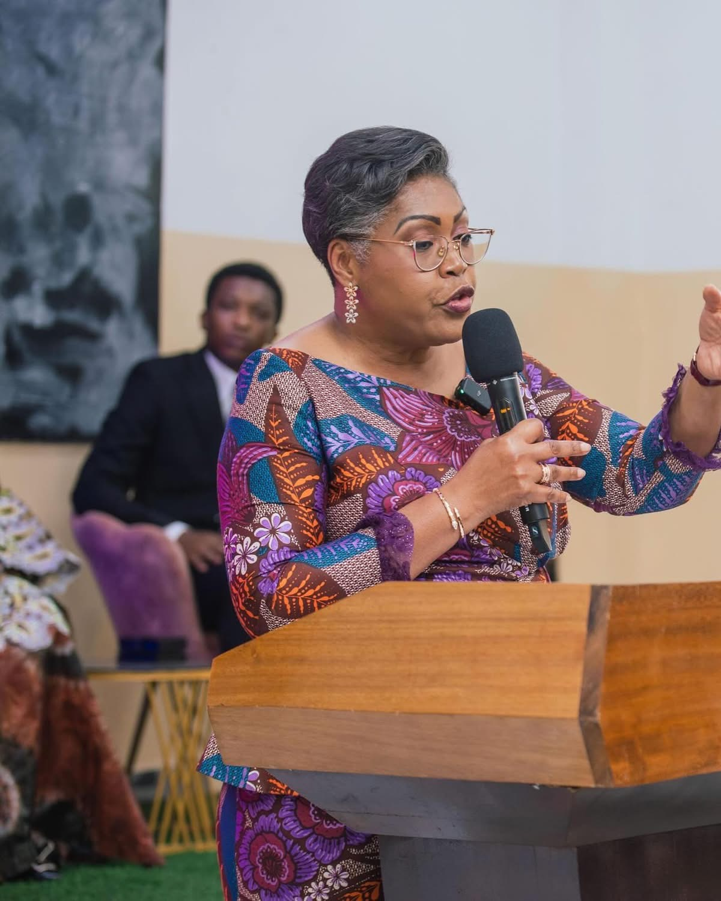
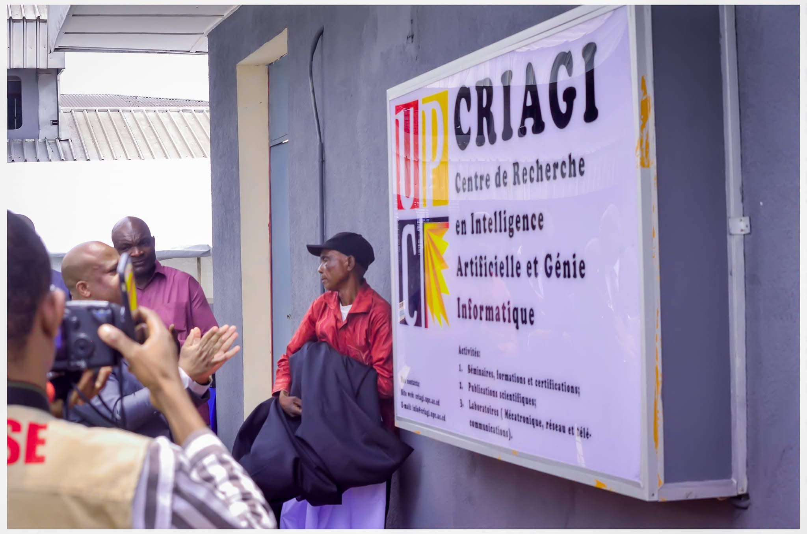
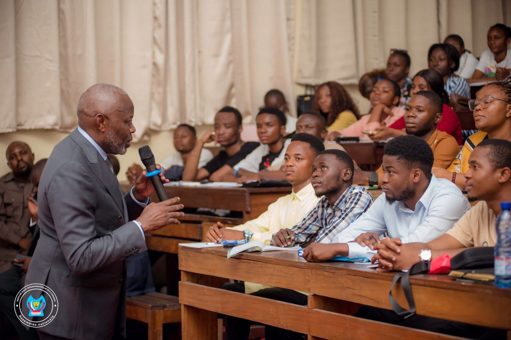

UPC Magazine
Le 20 mars 2025

Judith Suminwa
La première ministre de la République Démocratique du Congo, Judith Suminwa, a participé à une conférence orgaanisée par l'Université Protestante au Congo (UPC) le 20 mars 2025. Cette conférence, intitulée "Expo Femina" , a été organisée en l'honneur du mois de la femme. elle avait pour but de mettre en avant les réalisations des femmes dans divers domaines et de promouvoir l'égalité des genres. Lors de son discours, la première ministre a souligné l'importance de l'éducation et de l'autonomisation des femmes pour le développement du pays. Elle a également encouragé les jeunes filles à poursuivre leurs rêves et à ne pas laisser les obstacles les décourager. La conférence a été un succès, attirant de nombreux participants et suscitant des discussions enrichissantes sur les défis et les opportunités auxquels sont confrontées les femmes en République Démocratique du Congo. La conférence a également permis de créer des liens entre les participantes et de favoriser un échange d'idées sur les meilleures pratiques pour l'autonomisation des femmes.
UPC Magazine
Le 06 mars 2025

innauguration du CRIAGI : L'UPC s'ouvre à l'intelligence artificielle et au génie informatique
Une avancée majeure pour l'innovation au CongoLe 06 mars 2025, l'Université Protestante au Congo (UPC) a franchi une étape majeure dans le développement scientifique et technologique du pays en innogurant le Centre de Recherche en Intelligence Artificielle et en Génie logiciel (CRIAGI). Cette cérémonie, présidé par le réverend Docteur Robert N'kwim Bibi-Bikam, recteur de l'UPC, marque l'engagement de l'Université à devenir un acteur clé dans le domaine de l'intelligence artificielle (IA) et du génie logiciel en République Démocratique du Congo.
UPC Magazine
Le 19 Janvier 2025

Le Professeur Vital Kamerhe fait son retour à l'enseignement à l'UPC après plus de 20 ans
Le vendredi 20 décembre 2024, le Professeur Vital Kamerhe, président de l'Assemblée nationale de la République Démocratique du Congo, a marqué son retour dans le monde académique en dispensant son premier cours d'Économie publique à l'Université Protestante au Congo (UPC), après une interruption de plus de deux décennies.Accueilli chaleureusement par le Recteur de l'UPC, le Révérend Docteur Robert N'Kwim BiBi-Bikan, et présenté aux étudiants par le Vice-Doyen de la Faculté des Sciences Économiques, le Professeur N'Kongo Niumba Léonin, le Professeur Kamerhe a exprimé sa joie de retrouver les auditoires :
Comité Des Etudiants UPC
Le 14 décembre 2024

Acceuil des nouveaux
Le Comité des Etudiants de l'Université Protestante au Congo (UPC) a organisé une cérémonie d'accueil pour les nouveaux étudiants le 14 décembre 2024.
Cet événement, qui s'est tenu dans la pelouse principale de l'UPC, a été marqué par la présence du Recteur de l'Université, le Révérend Docteur Robert N'Kwim BiBi-Bikan,
ainsi que de plusieurs membres du corps professoral et administratif.
La cérémonie a débuté par un mot de bienvenue du Recteur, qui a souligné l'importance de l'intégration des nouveaux étudiants dans la communauté universitaire.
Il a encouragé les nouveaux venus à s'impliquer activement dans la vie académique et sociale de l'UPC, en participant aux activités organisées par le Comité des Etudiants et en s'engageant dans des projets qui contribuent au développement de l'université.
La présence de l'artiste congolais Gaz Mawete a ajouté une touche festive à l'événement. Le chanteur, connu pour ses succès dans le domaine de la musique congolaise, a interprété plusieurs de ses chansons, créant une ambiance joyeuse et conviviale.
Les nouveaux étudiants ont eu l'occasion de se rencontrer, d'échanger des idées et de partager leurs expériences, tout en découvrant les différentes activités proposées par le Comité des Etudiants.